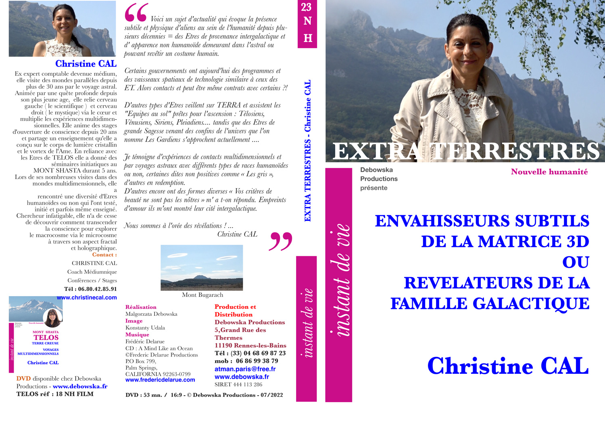
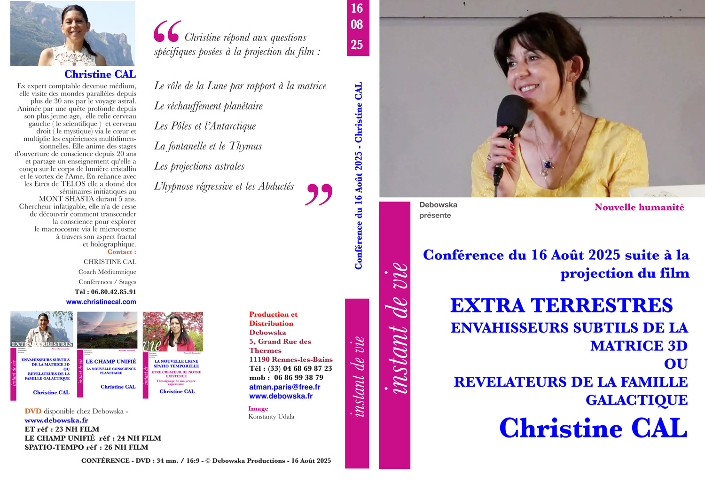
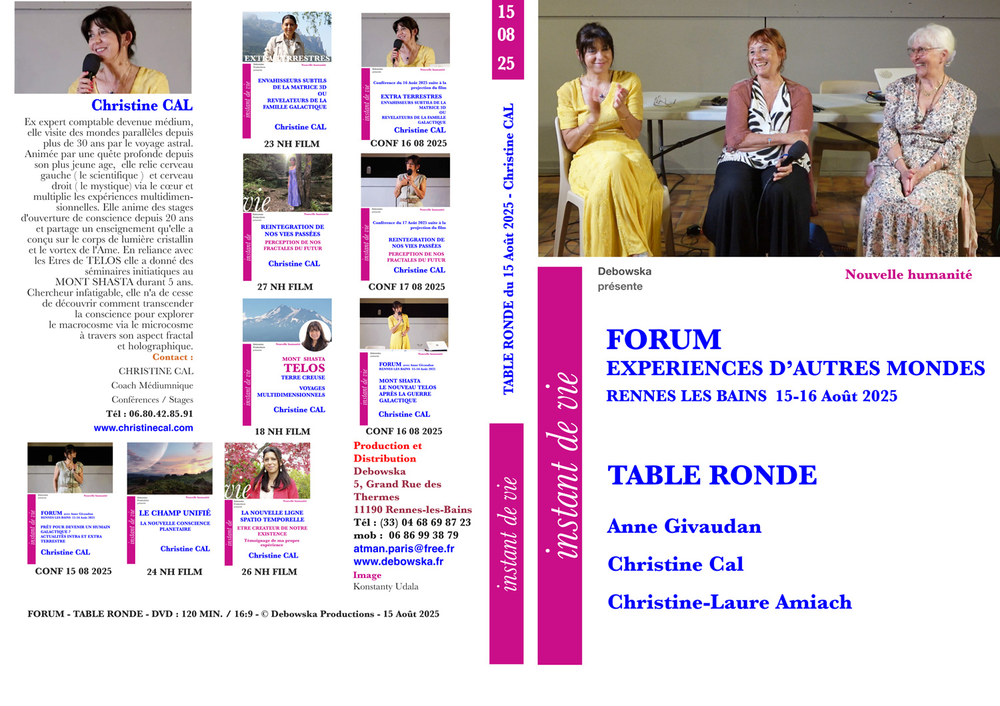

DVD 23 NH · 08/2022
Nouvelle Terre
Retour du futur pour participer à la création de la Nouvelle Terre
Time Lines · Stargate · Artefacts · Inner Earth
L'Ère des révélations — L'Ère du Verseau
Les photons qui descendent sur la Terre via les vents solaires provoquent des ouvertures de portails énergétiques et offrent l'opportunité de nouveaux paradigmes pour l'humanité.
La conception en trois dimensions, reflet de notre conscience, nous présente le temps comme linéaire. Cependant la vision quantique nous le révèle aujourd'hui comme spiralé, avec des potentialités d'ouvertures spatio-temporelles. En considérant donc le temps comme fractal, nous serions sur la sphère située au-dessus de celle de la période atlante/lémurienne.
De tout temps, les anciennes civilisations de sagesse ont incité l'humain à l'ouverture de conscience et au respect de la planète. De nos jours, les chamans Kogis de Colombie ou les Indiens Hopis ne cessent de dire avec humilité : « le petit homme (celui à la conscience encore endormie) part à sa perdition en détruisant la Terre Mère ». Ces hommes portent les mêmes valeurs et messages que des Êtres multidimensionnels dont la conscience nous parvient depuis d'autres espaces-temps : tous témoignent de l'urgence d'un éveil.
« Le problème de notre temps n'est pas la bombe atomique, mais le cœur de l'homme. » — Albert Einstein
Nous sommes en période Apocalyptique — mais Apocalypse signifie Révélations
Un grand Sage de TELOS me disait via mon channeling au Mont Shasta en 2019 : « Révélation, le Rêve en élévation. Tu méditeras… »
Sortir du rêve illusoire de la Matrice manipulatrice pour accéder à la Matrice Divine — et passer du « jeu » au Je (Je Suis).
À l'heure où les limites de notre perception de la réalité sont repoussées par l'avènement des nouvelles sciences quantiques, des découvertes archéologiques nous révèlent l'existence d'anciennes civilisations — squelettes de géants, pyramides dans les fonds marins. Gregg Braden, scientifique de renommée internationale spécialiste des anciennes sagesses, présente des phénomènes de guérison quantique. Le journaliste Stéphane Allix, fondateur de l'INREES, a examiné de nombreux récits de personnes affirmant avoir été en contact avec des entités non humaines. Deux exemples d'Êtres précurseurs d'un changement d'attitude qui témoignent de leur prise de conscience à travers cette révolution quantique.
Et si ces civilisations avaient simplement changé de dimension ?
La multidimensionnalité de l'Être
Des neuroscientifiques suisses et des chercheurs belges découvrent en septembre 2017, à partir de méthodes mathématiques, des structures et espaces géométriques multidimensionnels dans les réseaux du cerveau humain. Des milliards de neurones en interconnexion communiquent de façon très organisée à travers 7 dimensions, voire 11. Le microcosme est construit à l'image du macrocosme. Parler de 5ème dimension ne relève donc plus uniquement du langage des mystiques.
Des chercheurs chinois s'intéressent très sérieusement à la communication et téléportation quantiques. Le monde change — et il change de plus en plus vite.
Grâce à ce courant cosmique, l'humanité se trouve face à l'opportunité d'un retour vers la Source, c'est-à-dire vers une conscience plus sage, au service du vivant, de la paix et de l'amour compassionnel. En réalité, ce nouveau monde dont nous rêvons a toujours été là.
Échec du plan d'invasion par des E.T. involutifs — Time Line n°1
Effondrement de la Matrice en cours : outil de manipulation et de substitution de la race humaine par hybridation totale pour occupation de la planète.
Nombreux contacts et expériences avec des E.T. dans le plan astral depuis 2001 : Greys, un Draco Reptilien, Pléiadien et surtout Télosiens.

Conf 16/08/2025Conférence — suite à la projection du film
Retour vers le futur — Time Line n°2
Pour créer la nouvelle ligne spatio-temporelle du « Awakening Reseat ».
- Solar Flash / Activation d'artefacts par des E.T. ou des I.T. en collaboration avec une alliance de militaires internationaux.
- Conjonction des Time Lines en une seule.
« Nous sommes les ancêtres du Futur. »
 Conf 15/08/2025
Conf 15/08/2025
Prêt pour devenir un humain galactique ? Actualités intra et extra terrestre
La Nouvelle Terre
Apocalypse now
La véritable Révélation : les humains sortent de la Matrice d'illusion et de manipulation et découvrent que les dimensions sont imbriquées, constituant la CONSCIENCE UNIFIÉE.
« La présence du futur »
Via la multiplication des OVNIS et la venue du 3I/Atlas, nous connaissons de très fortes éruptions solaires et des flux intenses de rayons X — générant une situation similaire à un événement qui se produit tous les 30 000 ans.
Collaboration des E.T. évolutifs
Frères et amis de l'humanité, ou parties de nous-mêmes dans une version de notre futur, ils contribuent activement à la révélation de notre multidimensionnalité.
Un Humain Divin Créateur
La Nouvelle Terre se révèle progressivement, offrant l'opportunité de devenir un Humain Divin Créateur — certes au-delà de la 3D, mais technologique : dans cette galaxie, la technologie sous différentes formes occupe une place importante. Ce vaste programme est déjà en cours.
Reliance au champ unifié
 DVD 24 NH · 08/2022
DVD 24 NH · 08/2022
Le Champ Unifié — La nouvelle conscience planétaire

Table rondeForum « Expériences d'autres mondes »
Reliance de nouveaux lieux
Explorez aussi le Nouveau TELOS au Mont Shasta et le Nouveau Bugarach.